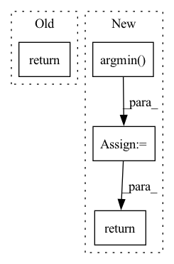

Pattern ID :40770

Before Change
super().__init__()
def forward(self, x):
return x
class Ngrammer(nn.Module):
def __init__(
After Change
// get cluster ids
cluster_ids = dists.argmin(dim = -1)
return cluster_ids
class Ngrammer(nn.Module):
def __init__(
In pattern: SUPERPATTERN
Frequency: 3
Non-data size: 4
Instances
Fragment ID: 115177204
Project Name: lucidrains/n-grammer-pytorch
Commit Name: 808b7a424855584966b29efbc02d57b2dc94aace
Time: 2021-12-03
Author: lucidrains@gmail.com
File Name: n_grammer_pytorch/n_grammer_pytorch.py
M Class Name: VectorQuantization
N Class Name: VectorQuantization
M Method Name: forward(3)
N Method Name: forward(2)
M Parent Class: nn.Module
N Parent Class: nn.Module
M File Name: n_grammer_pytorch/n_grammer_pytorch.py
N File Name: n_grammer_pytorch/n_grammer_pytorch.py
M Start Line: 46
M End Line: 46
N Start Line: 64
N End Line: 84
'>
Before Change
self.data = data
self.onehot_labels = onehot_labels
return onehot_labels, centroids
def _test_kmeans():
import os
After Change
2. Put labels based on distance
distance = self.compute_distance(data.unsqueeze(dim=2), centroids.unsqueeze(dim=1), dim=3) // (batch_size, num_samples, K)
cluster_ids = torch.argmin(distance, dim=2) // (batch_size, num_samples)
self.cluster_ids = cluster_ids
return cluster_ids, centroids
def _test_kmeans():
import os
'>
Fragment ID: 115177203
Project Name: tky823/dnn-based_source_separation
Commit Name: 7b95c667530d4ceff32ddab1a2e1a01eef946d34
Time: 2021-11-07
Author: delta9guitar97@gmail.com
File Name: src/algorithm/clustering.py
M Class Name: KMeans
N Class Name: KMeans
M Method Name: update_once(1)
N Method Name: update_once(1)
M Parent Class: KMeansBase
N Parent Class: nn.Module
M File Name: src/algorithm/clustering.py
N File Name: src/algorithm/clustering.py
M Start Line: 64
M End Line: 87
N Start Line: 105
N End Line: 127
'>
Before Change
optimizer.zero_grad()
loss.backward()
optimizer.step()
return loss
def fetch_batch(X_train, Y_train, BS):
// fetch a batch
After Change
optimizer.zero_grad()
loss.backward()
optimizer.step()
correct = out.detach().argmax(axis=1) == Y.detach().argmin(axis=1)
return loss, correct.cpu().numpy()
def fetch_batch(X_train, Y_train, BS):
// fetch a batch
'>
Fragment ID: 115177202
Project Name: geohot/tinygrad
Commit Name: 9a39ebefdec106ffe7d5136ed7b973fd24b3ec3b
Time: 2023-04-14
Author: geohot@gmail.com
File Name: examples/hlb_cifar10_torch.py
M Class Name: AnonimousClass
N Class Name: AnonimousClass
M Method Name: train_step_jitted(4)
N Method Name: train_step_jitted(4)
M Parent Class:
N Parent Class:
M File Name: examples/hlb_cifar10_torch.py
N File Name: examples/hlb_cifar10_torch.py
M Start Line: 55
M End Line: 59
N Start Line: 54
N End Line: 60